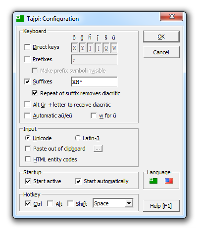
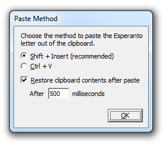

Tajpi - Esperanto Keyboard
Tajpi - Esperanto Keyboard
Configuring the program
This page contains instructions for configuring Tajpi. For information on TajpiScript please go here.
When Tajpi starts up for the first time it will ask you to configure it. The configuration window appears as follows:

- Direct keys - When pressing a key from any of the six text boxes, the Esperanto letter printed above
the text box will be displayed instead. This allows you to simulate a keyboard remap. If you want to input the the actual
key rather than the Esperanto letter you can hold down Alt Gr (or Ctrl+Alt)
while you press the key.
- Prefixes - Typing c, g, h, j, s or u
immediately after a prefix symbol will make the letter appear with a diacritic.
- Make prefix character invisible - Prefix characters will not appear when typed in. To make a prefix
character appear you can type either a space or any other character (except c, g, h, j,
s or u) after it. This simulates the behaviour of the so-called "dead keys" which exist in some
standard keyboard layouts.
- Suffixes - When one of the configured suffix characters is entered immediately after c,
g, h, j, s or u, the letter will receive a diacritic. By default the suffixes
box contains an H, however speakers of some languages (English for example) may wish to remove this so that diacritics
won't appear when typing "ch", "sh" etc.
- Repeat of suffix removes diacritic - Press the suffix key again to remove the diacritic.
- Alt Gr + letter to receive diacritic - Pressing Alt Gr (or Ctrl+Alt)
together with either c, g, h, j, s or u will make the letter appear
with a diacritic. For example Alt Gr+C would make ĉ appear.
- Automatic aŭ/eŭ - A u typed after a or e will appear as ŭ.
- w for ŭ - The letter w is pressed instead of u to show ŭ. This is useful if there is
a conflict with the system keymap's method for adding a diacritic to u.
- Unicode / Latin-3 - Lets you choose between Unicode and Latin-3 character sets. Unicode is recommended,
but Latin-3 support is included for those who wish to continue using their old Latin-3 fonts or applications that don't
fully support Unicode.
- Paste letter out of clipboard - When selected Tajpi will not input the diacritical letter directly to the
system, but will instead copy it to the clipboard and paste it out.
Next to this option is a button which you can click on to show the following window, which allows you to configure the
keystroke Tajpi will use when pasting the letter:

It is recommended to use Shift+Insert but Ctrl+V is provided as an alternative and should generally work
just as well.
Putting the letter in the clipboard will delete whatever was previously stored there, however it is possible to restore the
contents of the clipboard with the option "Restore clipboard contents after paste". When selected, the contents of the clipboard
will be automatically restored after the number of milliseconds as specified in the "After ... milliseconds" text box. Please
note that this only works for text. Files, pictures and other data types are not supported.
- HTML entity codes - Tajpi will input HTML entity codes instead of diacritical letters. For example
ĉ instead of ĉ. Web developers in particular may find this feature
useful.
- Start active - When Tajpi starts it will be in active mode.
- Automatic start - Tajpi will automatically start up along with Windows
- Hotkey - Configuration for the hotkey which activates / deactivates Tajpi.
- Language - You can click on the flags
 and
to switch the interface language between Esperanto and English.
and
to switch the interface language between Esperanto and English.